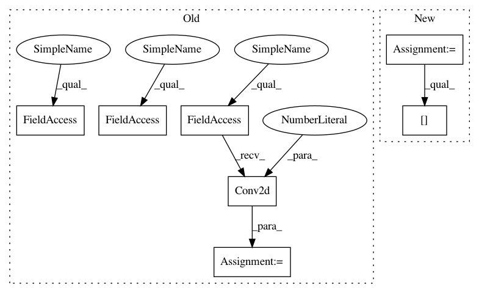

61228f3243eaee39cba31a9abd2afc6ead9612a8,implementations/cyclegan/models.py,UNetDown,__init__,#UNetDown#Any#Any#Any#Any#,10
Before Change
class UNetDown(nn.Module):
def __init__(self, in_size, out_size, bn=True, dropout=0.0):
super(UNetDown, self).__init__()
model = [ nn.Conv2d(in_size, out_size, 3, stride=2, padding=1),
nn.LeakyReLU(0.2, inplace=True) ]
if bn:
model += [nn.InstanceNorm2d(out_size)]
if dropout:
model += [nn.Dropout(dropout)]
self.model = nn.Sequential(*model)
def forward(self, x):
return self.model(x)
After Change
conv_block = [ nn.ReflectionPad2d(1),
nn.Conv2d(in_features, in_features, 3),
nn.InstanceNorm2d(in_features),
nn.ReLU(inplace=True),
nn.ReflectionPad2d(1),
nn.Conv2d(in_features, in_features, 3),
nn.InstanceNorm2d(in_features) ]
In pattern: SUPERPATTERN
Frequency: 3
Non-data size: 7
Instances
Project Name: eriklindernoren/PyTorch-GAN
Commit Name: 61228f3243eaee39cba31a9abd2afc6ead9612a8
Time: 2018-05-04
Author: eriklindernoren@gmail.com
File Name: implementations/cyclegan/models.py
Class Name: UNetDown
Method Name: __init__
Project Name: eriklindernoren/PyTorch-GAN
Commit Name: 61228f3243eaee39cba31a9abd2afc6ead9612a8
Time: 2018-05-04
Author: eriklindernoren@gmail.com
File Name: implementations/cyclegan/models.py
Class Name: UNetDown
Method Name: __init__
Project Name: tensorlayer/tensorlayer
Commit Name: b7628060e6ae3c23f37a21d47d625609074dda24
Time: 2018-03-13
Author: dhsig552@163.com
File Name: tests/test_layers_convolution.py
Class Name:
Method Name:
Project Name: open-mmlab/mmdetection
Commit Name: f64c95616677f90aa79b556251d2c426ef4d07dc
Time: 2018-12-30
Author: thangvubk@gmail.com
File Name: mmdet/models/backbones/resnet.py
Class Name: ResNet
Method Name: __init__